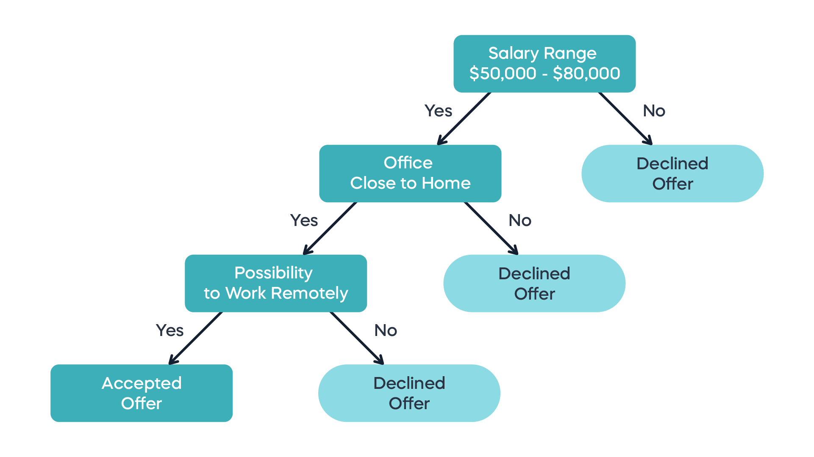
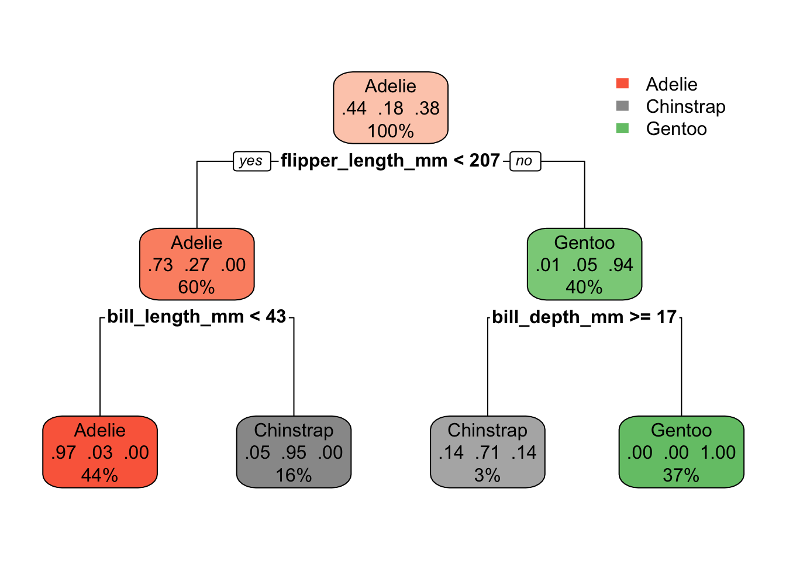
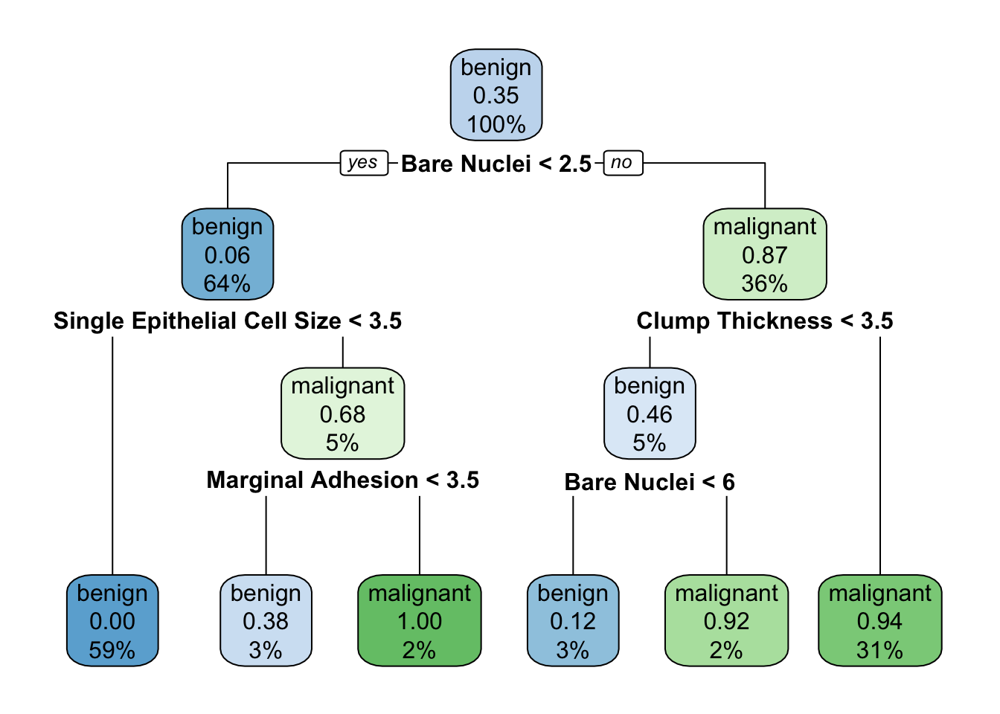
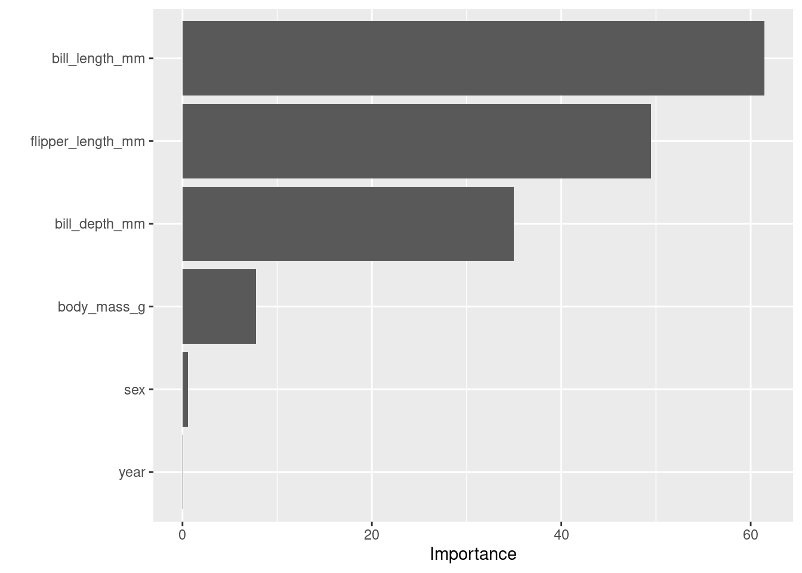
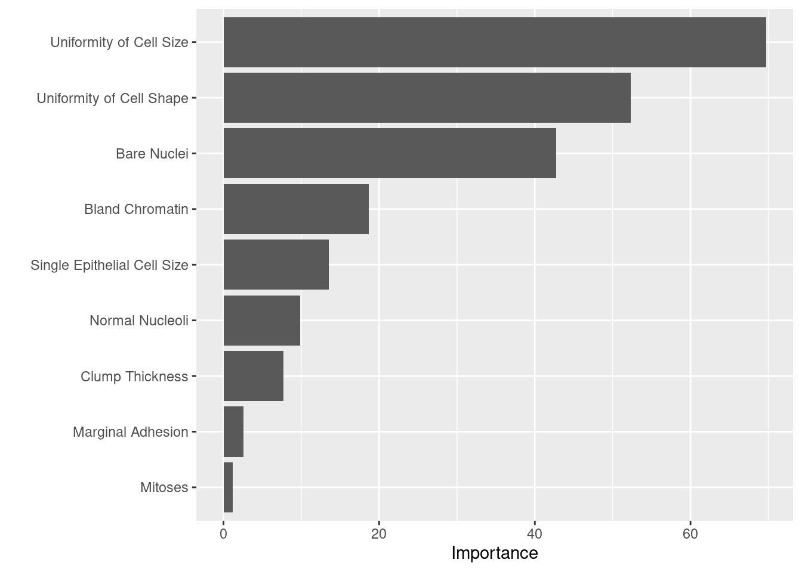

data("penguins")
pen_clean <- penguins %>% drop_na()
# Put 3/4 of the data into the training set
pen_split <- initial_split(pen_clean, prop = 3/4)
# Create data frames for the two sets:
pen_train <- training(pen_split)
pen_test <- testing(pen_split)15 Machine learning methods for classification
15.1 Introduction
The classification problem is a very common one in practice, and we have already seen the use of GLMs to systematically predict binary response variables. We have also used clustering to perform unsupervised learning, where we do not have any information about correct labels for data points. We now turn to supervised classification problems and introduce two different approaches: a Bayesian one and a tree-based one.
15.2 Naive Bayes classifier
Suppose that we wish to classify an observation into one of K classes, which means there is a response variable Y can take on K different values, or labels. Let \(π_k\) be the prior probability that a randomly chosen observation comes from the k-th class. Let \(f_k(X) =Pr(X|Y = k)\) be the density function of X for an observation that comes from the k-th class.
Assuming we have the prior probabilities and the conditional probability distributions of the observations within each category \(k\), we can use Bayes’ theorem to compute the probability of each class, given a set of observations \(x\) by turning around the conditionality:
\[ P(Y = k | X = x) = \frac{\pi_k f_k(x)}{\sum_i^K \pi_i f_i(x)} \] And let us use the notation \(p_k (x) = P(Y = k | X = x)\) to mean the posterior probability that an observation \(x\) belongs to class \(k\).
Let us use the penguin data as an example, where we want to classify the observations by species. Then, if we take a training set with known classifications, we can take the prior probabilities \(\pi_k\) to be the fractions of observed birds of each species, and the probability distributions of each explanatory variable for each species \(f_k(X)\) can be estimated from the observed distributions of the explanatory variables (flipper lengths, etc.) for Adelie, Gentoo, and Chinstrap subsets of observations.
The difficult part in the above example is estimating the distributions \(f_k(X)\), which is especially challenging for joint distributions of multiple variables. One method, called Linear Discriminant Analysis, assumes the distributions have the same covariance matrices for all classes and only differ in their mean values. Another, called Quadratic Discriminant Analysis, assumes different covariance matrices for different classes.
The Naive Bayes classifier instead assumes that within each class the explanatory variables \(X_i\) are independent, and thus
\[ f_k(x) = f_{k1} (x_1) \times f_{k2} (x_2) \times ... \times f_{kn} (x_n) \]
where \(f_{ki}(x_i)\) is the probability distribution of the i-th explanatory variable \(x_i\) for class \(k\).
This modifies the Bayes’ formula to look like this:
\[ P(Y = k | X = x) = \frac{\pi_k f_{k1} (x_1) \times f_{k2} (x_2) \times ... \times f_{kn} (x_n)}{\sum_i^K \pi_i f_{k1} (x_1) \times f_{k2} (x_2) \times ... \times f_{kn} (x_n)} \]Although it looks more complicated, we can compute each distribution function separately, so as long as there is enough data in the training set to estimate each explanatory variable for each class, the calculation is manageable.
15.2.1 Naive Bayes penguin example
Here is an example of using tidymodels for classification using Naive Bayes.
First, we load and clean the data, then split the observations into training and test sets.
We then define a model specification using the parsnip package. Here is how to set up a Naive Bayes model:
nb_spec <- naive_Bayes() %>%
set_mode("classification") %>%
set_engine("naivebayes") %>%
set_args(usekernel = FALSE) Next we define the recipe, which specifies the data tibble and which variables will be explanatory (predictors) and which will be the response variable. In this case we will use species as the response variables, and all other variables, except for island as predictors.
pen_recipe <-
recipe(species ~ ., data = pen_train) %>%
update_role(island, new_role = "ID")Then we define the workflow, which combines the model with the recipe:
pen_workflow_nb <- workflow() %>%
add_model(nb_spec) %>%
add_recipe(pen_recipe)Finally, we use this workflow on the data set to fit the response variable on the training set:
fit_nb <- pen_workflow_nb %>% fit(pen_train)We can examine the contents of the fitted model, such as parameters, using extract_fit_parsnip. In the case of Naive Bayes, it returns the calculated mean and standard deviations for each variable, by class:
fit_nb %>%
extract_fit_parsnip() parsnip model object
================================== Naive Bayes ==================================
Call:
naive_bayes.default(x = maybe_data_frame(x), y = y, usekernel = ~FALSE)
---------------------------------------------------------------------------------
Laplace smoothing: 0
---------------------------------------------------------------------------------
A priori probabilities:
Adelie Chinstrap Gentoo
0.4417671 0.1807229 0.3775100
---------------------------------------------------------------------------------
Tables:
---------------------------------------------------------------------------------
::: bill_length_mm (Gaussian)
---------------------------------------------------------------------------------
bill_length_mm Adelie Chinstrap Gentoo
mean 38.760909 48.648889 47.637234
sd 2.638637 3.421431 3.223869
---------------------------------------------------------------------------------
::: bill_depth_mm (Gaussian)
---------------------------------------------------------------------------------
bill_depth_mm Adelie Chinstrap Gentoo
mean 18.3236364 18.3444444 14.9851064
sd 1.2007587 1.1779326 0.9946045
---------------------------------------------------------------------------------
::: flipper_length_mm (Gaussian)
---------------------------------------------------------------------------------
flipper_length_mm Adelie Chinstrap Gentoo
mean 189.627273 195.911111 217.265957
sd 6.395037 7.806822 6.722096
---------------------------------------------------------------------------------
::: body_mass_g (Gaussian)
---------------------------------------------------------------------------------
body_mass_g Adelie Chinstrap Gentoo
mean 3668.6364 3717.7778 5105.3191
sd 446.4107 381.4827 511.9916
---------------------------------------------------------------------------------
::: sex (Bernoulli)
---------------------------------------------------------------------------------
sex Adelie Chinstrap Gentoo
female 0.5181818 0.5777778 0.4787234
male 0.4818182 0.4222222 0.5212766
---------------------------------------------------------------------------------
# ... and 1 more table
---------------------------------------------------------------------------------Now we can use the parameters from the parameters from the fitted model to predict the species in the test set. The function augment performs the prediction and adds a new column called .pred_class to the data frame. Then we can compare the truth with predictions using a confusion matrix or an accuracy score:
compare_pred <- augment(fit_nb, new_data = pen_test)
compare_pred %>% conf_mat(truth = species, estimate = .pred_class) Truth
Prediction Adelie Chinstrap Gentoo
Adelie 34 2 0
Chinstrap 2 21 0
Gentoo 0 0 25compare_pred %>% accuracy(truth = species, estimate = .pred_class)# A tibble: 1 × 3
.metric .estimator .estimate
<chr> <chr> <dbl>
1 accuracy multiclass 0.95215.2.2 Breast cancer data
Here is an data set of breast cancer samples, where the classification of each sample is given in variable Class as either "benign" or "malign". The other variables contain observations that we can use to classify the samples.
First, we clean and split the data set:
data("breastcancer")
glimpse(breastcancer)Rows: 699
Columns: 10
$ `Clump Thickness` <int> 5, 5, 3, 6, 4, 8, 1, 2, 2, 4, 1, 2, 5, 1…
$ `Uniformity of Cell Size` <int> 1, 4, 1, 8, 1, 10, 1, 1, 1, 2, 1, 1, 3, …
$ `Uniformity of Cell Shape` <int> 1, 4, 1, 8, 1, 10, 1, 2, 1, 1, 1, 1, 3, …
$ `Marginal Adhesion` <int> 1, 5, 1, 1, 3, 8, 1, 1, 1, 1, 1, 1, 3, 1…
$ `Single Epithelial Cell Size` <int> 2, 7, 2, 3, 2, 7, 2, 2, 2, 2, 1, 2, 2, 2…
$ `Bare Nuclei` <int> 1, 10, 2, 4, 1, 10, 10, 1, 1, 1, 1, 1, 3…
$ `Bland Chromatin` <int> 3, 3, 3, 3, 3, 9, 3, 3, 1, 2, 3, 2, 4, 3…
$ `Normal Nucleoli` <int> 1, 2, 1, 7, 1, 7, 1, 1, 1, 1, 1, 1, 4, 1…
$ Mitoses <int> 1, 1, 1, 1, 1, 1, 1, 1, 5, 1, 1, 1, 1, 1…
$ Class <fct> benign, benign, benign, benign, benign, …cancer_clean <- breastcancer %>% drop_na()
# Put 3/4 of the data into the training set
can_split <- initial_split(cancer_clean, prop = 3/4)
# Create data frames for the two sets:
can_train <- training(can_split)
can_test <- testing(can_split)Next, we can use the same model specification nb_spec, define a new recipe and apply it to the data, and fit the model:
can_recipe <-
recipe(Class ~ ., data = can_train) %>%
update_role(`Uniformity of Cell Shape`, `Uniformity of Cell Size`, `Bland Chromatin`, new_role = "ID")
can_workflow_nb <- workflow() %>%
add_model(nb_spec) %>%
add_recipe(can_recipe)
can_fit_nb <- can_workflow_nb %>% fit(can_train)Predict the classification of samples in the test set and compare the truth with predictions using a confusion matrix and an accuracy score:
compare_pred <- augment(can_fit_nb, new_data = can_test)
compare_pred %>% conf_mat(truth = Class, estimate = .pred_class) Truth
Prediction benign malignant
benign 107 3
malignant 5 56compare_pred %>% accuracy(truth = Class, estimate = .pred_class)# A tibble: 1 × 3
.metric .estimator .estimate
<chr> <chr> <dbl>
1 accuracy binary 0.953can_fit_nb %>%
extract_fit_parsnip() parsnip model object
================================== Naive Bayes ==================================
Call:
naive_bayes.default(x = maybe_data_frame(x), y = y, usekernel = ~FALSE)
---------------------------------------------------------------------------------
Laplace smoothing: 0
---------------------------------------------------------------------------------
A priori probabilities:
benign malignant
0.6484375 0.3515625
---------------------------------------------------------------------------------
Tables:
---------------------------------------------------------------------------------
::: Clump Thickness (Gaussian)
---------------------------------------------------------------------------------
Clump Thickness benign malignant
mean 2.906627 7.200000
sd 1.652706 2.425194
---------------------------------------------------------------------------------
::: Marginal Adhesion (Gaussian)
---------------------------------------------------------------------------------
Marginal Adhesion benign malignant
mean 1.3042169 5.5166667
sd 0.9069622 3.1947495
---------------------------------------------------------------------------------
::: Single Epithelial Cell Size (Gaussian)
---------------------------------------------------------------------------------
Single Epithelial Cell Size benign malignant
mean 2.1234940 5.3388889
sd 0.9294392 2.4498635
---------------------------------------------------------------------------------
::: Bare Nuclei (Gaussian)
---------------------------------------------------------------------------------
Bare Nuclei benign malignant
mean 1.343373 7.622222
sd 1.212791 3.112698
---------------------------------------------------------------------------------
::: Normal Nucleoli (Gaussian)
---------------------------------------------------------------------------------
Normal Nucleoli benign malignant
mean 1.286145 5.655556
sd 1.042621 3.312954
---------------------------------------------------------------------------------
# ... and 1 more table
---------------------------------------------------------------------------------15.3 Decision Trees
Suppose instead that we represent the classification process as a sequence of binary choices, that eventually lead to a category. This can be represented by a decision tree, whose internal nodes are separators of the space of observations (all the values of explanatory variables) that divide it into regions, and the leaves are the labels of these regions. (Decision trees can also be used for quantitative response variables, but we will focus on classification.) For example, here is a a decision tree for accepting a job offer:

Building a decision tree for classification happens by sequential splitting the space of observations, starting with the decision that gives the most bang for the buck. Let us define the quality of the split into \(M\) region by calculating how many observations in that regions actually belong to each category \(k\). The Gini index (or impurity) is defined as the product of the probability of an observation (in practice, the fraction of observations in the training set) being labeled correctly with label \(k\) (\(p_k\)) times the probability of it being labeled incorrectly (\(1-p_k\)), summed over all the labels \(k\):
\[ G = \sum_k (1-p_k)p_k \]
Alternatively, one can use the Shannon information or entropy measure:
\[ S = -\sum_k p_k log(p_k) \]
Notice that both measures are smallest when \(p_k\) is close to 1 or 0, so they both tell the same story for a particular region: if (almost) all the points are points are either classified or incorrectly, these measures are close to 0.

One of these measures is used to create the sequential splits in the training data set. The biggest problem with this decision tree method is that it’s a greedy algorithm that easily leads to overfitting: as you can see in the figure above, it can create really complicated regions in the observation space that may not correspond to meaningful distinctions.
15.3.1 Penguin data
Define the model specifications for decision trees:
tree_spec <- decision_tree() %>%
set_engine("rpart") %>%
set_mode("classification")Create a recipe, apply the model and fit it on the training set:
pen_recipe <-
recipe(species ~ ., data = pen_train) %>%
update_role(island, new_role = "ID")
pen_workflow_tree <- workflow() %>%
add_model(tree_spec) %>%
add_recipe(pen_recipe)
fit_tree <- pen_workflow_tree %>% fit(pen_train)Predict the classification for the test set and validate the predictions:
compare_pred <- augment(fit_tree, new_data = pen_test)
compare_pred %>% conf_mat(truth = species, estimate = .pred_class) Truth
Prediction Adelie Chinstrap Gentoo
Adelie 33 2 0
Chinstrap 3 21 2
Gentoo 0 0 23compare_pred %>% accuracy(truth = species, estimate = .pred_class)# A tibble: 1 × 3
.metric .estimator .estimate
<chr> <chr> <dbl>
1 accuracy multiclass 0.917Make a plot of the best-fit decision tree:
fit_tree %>%
extract_fit_engine() %>%
rpart.plot()
15.3.2 Breast cancer data
Using the same model tree_spec, create a recipe, apply the model and fit it on the training set:
can_recipe <-
recipe(Class ~ ., data = can_train) %>%
update_role(`Uniformity of Cell Shape`, `Uniformity of Cell Size`, `Bland Chromatin`, new_role = "ID")
can_workflow_tree <- workflow() %>%
add_model(tree_spec) %>%
add_recipe(can_recipe)
fit_tree <- can_workflow_tree %>% fit(can_train)Predict the classification for the test set and validate the predictions:
compare_pred <- augment(fit_tree, new_data = can_test)
compare_pred %>% conf_mat(truth = Class, estimate = .pred_class) Truth
Prediction benign malignant
benign 107 3
malignant 5 56compare_pred %>% accuracy(truth = Class, estimate = .pred_class)# A tibble: 1 × 3
.metric .estimator .estimate
<chr> <chr> <dbl>
1 accuracy binary 0.953Make a plot of the best-fit decision tree:
fit_tree %>%
extract_fit_engine() %>%
rpart.plot()
15.4 Random Forests
Overfitting usually results from modeling meaningless noise in the data instead of real differences. This gave rise to the idea to “shake up” the algorithm and see if the splits it produces are robust if the training set is different. In fact, let’s use multiple trees and look at what the consensus of the ensemble can produce. This approach is called bagging, which makes use of an random ensemble of parallel classifiers, each of which over-fits the data, it combines the results to find a better classification. An ensemble of randomized decision trees is known as a random forest.
Essentially, the process is as follows: use random sampling from the data set (bootstrapping) to generate different training sets and train different decision trees on each. Then for each observation, find its consensus classification among the whole ensemble; that is, how does the plurality of the trees classify it.
Since each data point is left out of a number of trees, one can estimate an unbiased error of classification by computing the “out-of-bag” error: for each observation, used the classification produced by all the trees that did not have this one points in the bag. This is basically a built-in cross-validation measure.
15.4.1 Penguin data
Define the model specification for random forests:
rf_spec <- rand_forest(mtry = 4) %>%
set_engine("ranger") %>%
set_mode("classification")Create a recipe, apply the model and fit it on the training set:
rf_recipe <-
recipe(species ~ ., data = pen_clean) %>%
update_role(island, new_role = "ID")
pen_workflow_rf <- workflow() %>%
add_model(rf_spec) %>%
add_recipe(pen_recipe)
fit_rf <- pen_workflow_rf %>% fit(pen_clean)Predict the classification for the test set and validate the predictions:
compare_pred <- augment(fit_rf, new_data = pen_clean)
compare_pred %>% conf_mat(truth = species, estimate = .pred_class) Truth
Prediction Adelie Chinstrap Gentoo
Adelie 145 1 0
Chinstrap 1 67 0
Gentoo 0 0 119compare_pred %>% accuracy(truth = species, estimate = .pred_class)# A tibble: 1 × 3
.metric .estimator .estimate
<chr> <chr> <dbl>
1 accuracy multiclass 0.994Calculate the "last fit" of the entire data set:
last_rf <-
rand_forest(mtry = 4, trees = 100) %>%
set_engine("ranger", importance = "impurity") %>%
set_mode("classification")
# the last workflow
last_workflow <-
pen_workflow_rf %>%
update_model(last_rf)
# the last fit
set.seed(3)
last_rf_fit <-
last_workflow %>%
last_fit(pen_split)Plot the importance measures of different variables:
last_rf_fit %>%
collect_metrics()# A tibble: 2 × 4
.metric .estimator .estimate .config
<chr> <chr> <dbl> <chr>
1 accuracy multiclass 0.952 Preprocessor1_Model1
2 roc_auc hand_till 0.999 Preprocessor1_Model1last_rf_fit %>%
pluck(".workflow", 1) %>%
pull_workflow_fit() %>%
vip(num_features = 20)
15.4.2 Cancer data
Using the same model rf_spec, create a recipe, apply the model and fit it on the training set:
can_rf_recipe <-
recipe(Class ~ ., data = cancer_clean)
can_workflow_rf <- workflow() %>%
add_model(rf_spec) %>%
add_recipe(can_rf_recipe)
fit_rf <- can_workflow_rf %>%
fit(cancer_clean)Predict the classification for the test set and validate the predictions:
compare_pred <- augment(fit_rf, new_data = can_test)
compare_pred %>% conf_mat(truth = Class, estimate = .pred_class) Truth
Prediction benign malignant
benign 109 0
malignant 3 59compare_pred %>% accuracy(truth = Class, estimate = .pred_class)# A tibble: 1 × 3
.metric .estimator .estimate
<chr> <chr> <dbl>
1 accuracy binary 0.982Calculate the "last fit" of the entire data set:
last_rf <-
rand_forest(mtry = 4, trees = 100) %>%
set_engine("ranger", importance = "impurity") %>%
set_mode("classification")
# the last workflow
last_workflow <-
can_workflow_rf %>%
update_model(last_rf)
# the last fit
set.seed(3)
last_rf_fit <-
last_workflow %>%
last_fit(can_split)Plot the importance measures of different variables:
last_rf_fit %>%
collect_metrics()# A tibble: 2 × 4
.metric .estimator .estimate .config
<chr> <chr> <dbl> <chr>
1 accuracy binary 0.959 Preprocessor1_Model1
2 roc_auc binary 0.993 Preprocessor1_Model1last_rf_fit %>%
pluck(".workflow", 1) %>%
pull_workflow_fit() %>%
vip(num_features = 20)